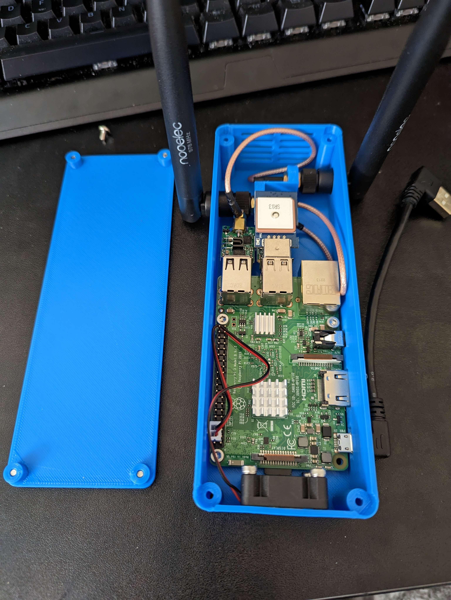

ADS-B Case
1/27/2023
So This is a pretty niche issue, but it makes for a cool project. When flying an airplane you generally want to avoid running into other airplanes (citation needed). In 2020 a new rule took effect that requires aircraft to be equipped with Automatic Dependent Surveillance-Broadcast, or ADS-B. This tech allows an aircraft to broadcast its position and velocity to all nearby aircraft, which allows pilots to better identify and avoid traffic around them. There's just one small issue: The law requires ADS-B broadcasts, but doesn't require you to receive these broadcasts. Most modern aircraft include receivers of course, and display traffic on the aircraft's GPS, but older aircraft that were retrofitted with the system may not even have a GPS. So if you fly an older plane, and want to have ADS-B information, what do you do? There are off-the-shelf products that receive ADS-B and connect to a tablet to display the traffic, but those are very expensive ($500+). Thankfully the open-source community has tackled this issue and created Stratux. It uses a Raspberry Pi with USB SDR antennas to receive and process ADS-B signals, and pipe them to your tablet of choice. The European version of the project appears to be the most active at the time of writing, but thankfully they support the US system as well. The only real project then is to buy the pi, SDR antennas, etc, and fit them into something. I searched for a printable case that I liked, and there were several, but none that were perfect. I found a model of a Pi 3 in Onshape's public documents, imported it into my own project, and cranked out a case. You can find the CAD here.

A little tight, but it gets the job done.
The only real challenge here was keeping the case compact and antennas cool. Good GPS and SDR receivers get toasty, not to mention the Pi that must process those signals. A lot of cases I found were either compact or had good cooling, but not both. I managed to keep my design compact by removing the plastic shells off all the antennas so that no USB extenders were necessary, and had my fan mounting to push air through the whole case from one end to the other. Even sitting in the sun I've yet to have temperature issues.
The only improvement I'd make is a better way to keep the antennas tight, as positioning them around can cause them to unscrew from their mounts. A dab of glue might be best.
Keep making,
-dd